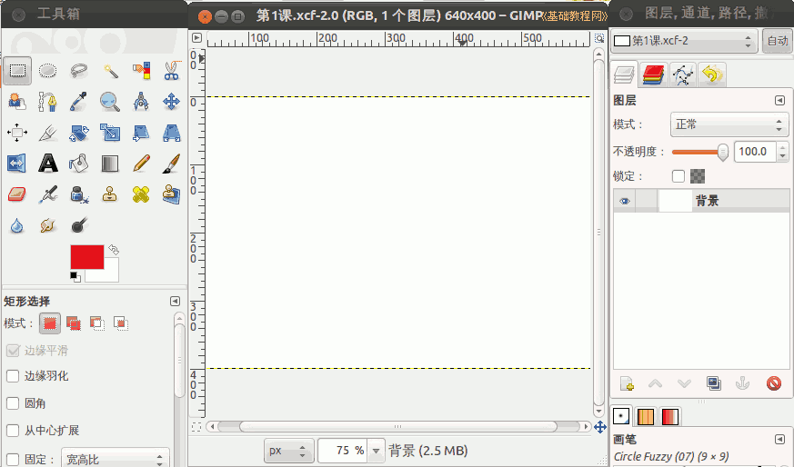

2012-2013 第二学期八年级图像处理教学设计
作者：TeliuTe 来源：基础教程网
一、gimp文件夹、图标、保存 返回目录 下一课
（一）教学设计
1、学习目标：gimp文件夹、图标、保存
2、注意事项：绕过弯来，既不要跳也不要落，一楼过了二楼
3、教学过程：
1）教师准备学案和板书；
2）学生整队进入，开机抄黑板上笔记；
3）教师讲解板书演示操作；
4）学生打指法、日志、完成操作；
5）教师打勾记录学生指法成绩，检查日志和操作；
注：学生抄完笔记就开始打指法、日志，老师讲完后再继续完成；
（二）板书设计(学生笔记)
第1课 gimp文件夹、图标、保存
1.打开文件夹，创建“gimp”文件夹
2.点左上角主按钮、gimp、添加到左侧
3.打开gimp，右键、文件新建，确定
4.文件、保存、“第1课”，再另存.jpg
（字体、字号、颜色、自己可见）
操作图示：

（三）课后记 2013-02-27 18:57
--
上周八年级没上课，这周开始第1课
个子都长高了，现在的营养条件还是好
--
前面两个有些着急了，内容可以学完
不用担心学生做不完，关键一进来就要先学
--
先把新生的用户建好，注册一个校园网用户
把忘记密码的客人会话解一下，校园网的让重新注册，邮箱忘记了
--
这时候就提醒一下学生，抓紧时间把基础的指法和日志打完
把动作慢的提醒一下，还得找个方法，督促一下的，只是督促不用别的想法
--
进来如果安静的话，可以把内容整体概述一下
学生心里用数，这节课要完成哪些学习任务
--
指法打E04的，七年级还是E01只是字数变成200
八年级上学期E02下学期E03吗？好像不对先这样了
--
九年级再倒着打回去也行，到时候说了
或者把程序改一下，再加两篇指法的
--
不要求速度，把盲打练出来，日志也是
低头容易驼背，还惯成毛病了，效果不是很好慢慢来
--
先把板书讲一下，七年级的没有讲直接演示
把gimp单词读一下，发现学生不习惯大声朗读放不开，结果有拼写错误的
--
不抄笔记的问题比较多，八年级不好约束
要不还是尝试一下抄笔记，只是没那么多精力去要求
--
课题中三个学习要求已经有了，内容上细化一下步骤
好多近视的，黑板也看不清，做起来容易卡
--
建文件夹和添加按钮都可以，新建空白文档也还好
保存的时候就出问题了，找不到要保存的位置
--
后面把保存的方法再强调一下，保存位置保存文件名
打开也不清楚，搞不清路径的概念，看不懂当前的位置
--
演示的时候把标签，把文件夹最小化示范一下
这样后面检查的时候要方便，还是有没打开准备好的，多强调了
--
基本上从头学到尾，有个别还没检查
中等的多一些，差的挑出来后面再想办法
返回目录 下一课
本教程由86团学校TeliuTe制作|著作权所有
基础教程网：http://teliute.org/
美丽的校园……
转载和引用本站内容，请保留作者和本站链接。